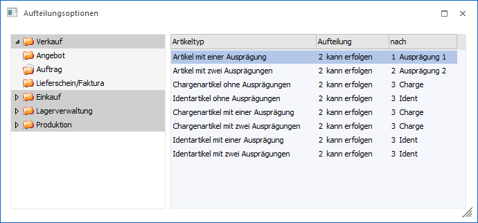
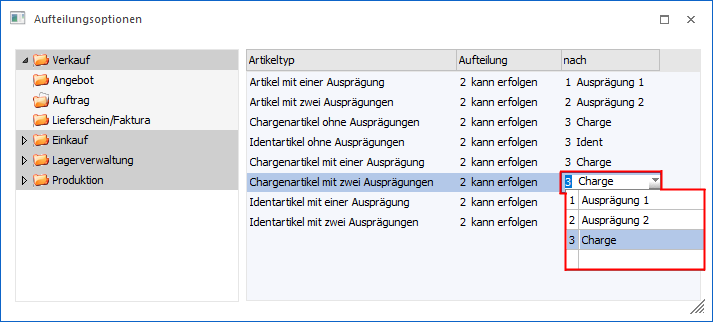
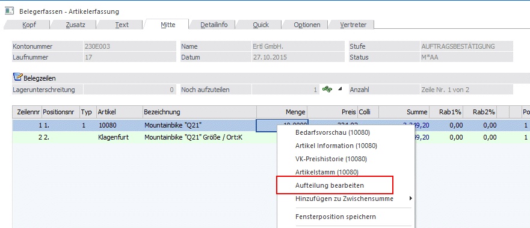

Im Fenster…
1 WinLine FAKT
1 Stammdaten
1 Ausprägungen
1 Aufteilungsoptionen
… kann eingegeben werden, in welchen Bereichen bzw. ab welcher Stufe Hauptartikel aufgeteilt werden können / müssen / nicht dürfen.
Achtung
Die Aufteilungsoptionen für die Stufen "Angebot" und "Auftragsbestätigung" bleiben unberücksichtigt wenn es sich beim aufzuteilenden Artikel um eine Handelsstückliste handelt!

Links im Verzeichnisbaum werden die Programmbereiche angezeigt, für welche die Einstellung vorgenommen werden kann:
ü Verkauf
ü Angebot
ü Auftrag
ü Lieferschein/Faktura
ü Einkauf
ü Anfrage
ü Bestellung
ü Lieferantenlieferschein/ -faktura
ü Lagerverwaltung
ü Lagerbuchhaltung
ü Produktion
ü Produktionsvorbereitung
ü Produktionskorrektur
ü Produktionsendmeldung
Man kann für jeden angezeigten Programmbereich bestimmen, ob eine Ausprägung erfolgen kann, darf oder muss. Die Aufteilungsoption wird rechts in der Tabelle für den markierten Programmbereich geändert.
Ø Artikeltyp
Anzeige aller möglichen Artikeltypen im Zusammenhang mit Ausprägungsartikeln.
Artikel mit einer Ausprägung sind z.B. Artikel, die als Ausprägung Farben hinterlegt haben.
Chargenartikel mit einer Ausprägung sind z.B. Artikel, die als Ausprägung Farben hinterlegt haben und in Chargen geführt werden.
Ø Aufteilung
In dieser Spalte können Sie pro Artikeltyp bestimmen, ob die Aufteilung:
ü erfolgen kann
ü erfolgen muss
ü nicht erfolgen darf
Hinweis
Je nach Einstellung ob eine Aufteilung erfolgen soll oder nicht, sprich ob das Aufteilungsfenster geöffnet wird oder nicht, werden auch Zeilenformeln (lt. Artikelgruppe) behandelt. D.h. wird das Aufteilungsfenster NICHT geöffnet, so wird eine hinterlegte Zeilenformel beim Hauptartikel abgearbeitet; wird das Aufteilungsfenster geöffnet, ist dies NICHT der Fall.
Ø nach
Nach welcher Ebene soll aufgeteilt werden. Ausprägung1 / 2 bzw. Chargen-/ Identnummer
Beispiel 1
Ein Artikel wird mit Größe (Ausprägung 1), Farbe (Ausprägung 2) und Charge geführt, d.h. es ist ein Artikel des Typs "Chargenartikel mit zwei Ausprägungen".

Die Aufteilung ist möglich nach den folgenden Varianten:
ü Ausprägung 1
nach Lagerort
ü Ausprägung 2
nach Lagerort und
Farbe
ü Charge
nach Lagerort, Farbe und
Chargen
Hinweis "Zwischenartikel"
Wenn in einem Beleg ein aufgeteilter Hauptartikel vorhanden ist (Zwischenartikel mit einer Aufteilung in einer Ebene unterhalb der, die in den Aufteilungsoptionen eintragen ist), gibt es im Kontextmenü (rechte Maustaste) des Hauptartikels die Option "Aufteilung bearbeiten". Wird dieser Eintrag gewählt, so wird das Aufteilungsfenster geöffnet und es können die Mengen der "Zwischenartikel" geändert werden. Es können jedoch keine weiteren Zwischenartikel ausgewählt werden.
Beispiel
Ein Hauptartikel mit 2 Ausprägungen (z.B. Lagerort und Farbe) wird innerhalb eines Auftrages auf die Ausprägung 1 aufgeteilt; d.h. im Beleg stehen die Zeilen für den Hauptartikel und den Zwischenartikel (=Ausprägung 1). Um im Auftrag die Menge des Zwischenartikels bearbeiten zu können, muss im Kontextmenü der rechten Maustaste der Eintrag "Aufteilung bearbeiten" gewählt werden.

Tabellenbuttons

Ø Ausgabe Excel
Durch Anwahl des Buttons "Ausgabe Excel" wird der Inhalt der Tabelle nach Microsoft Excel übergeben.
Ø Tabelleneinstellungen speichern
Die Spalten einer Tabelle können grundsätzlich an beliebige Positionen verschoben, bzw. in der Breite entsprechend angepasst werden. Durch Anwahl des Buttons "Tabelleneinstellungen speichern" werden die Einstellungen benutzerspezifisch gespeichert und bei dem nächsten Aufruf des Programmpunktes wieder vorgeschlagen.
Ø Gesamteinstellungen speichern…
Im Gegensatz zu "Tabelleneinstellungen speichern" können mit "Gesamteinstellungen speichern" mehrere Tabellenaufbauten gespeichert und nach Wunsch geladen werden. Zusätzlich werden Sonderfunktionen der Tabelle (z.B. "Spalte gruppieren") ebenfalls bei der Speicherung bedacht.
Buttons

Ø Ok
Durch Anwahl des Buttons "Ok" bzw. der Taste F5 werden die Einstellungen gespeichert.
Ø Ende
Durch Anklicken des Buttons "Ende" bzw. der Taste ESC wird das Fenster geschlossen und alle nicht gespeicherten Eingaben verworfen.
Ø Liste ausgeben
Mit Hilfe des Buttons "Liste ausgeben" wird eine Liste aller definierten Einstellungen am Bildschirm ausgegeben.
Hinweis
Mit einem Klick auf den Artikeltyp in der Auswertung erhält man eine Liste aller Artikel, welche diesem Ausprägungstyp entsprechen.